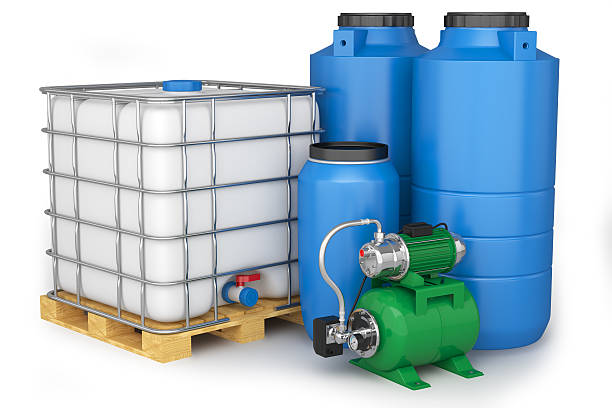

Поливни системи
Индивидуални решения за всеки двор, градина или тераса, осигуряващи ефективно поливане и пестене на вода.

Хидрофори и резервоари
Идеалното решение при воден режим, липса на налягане или необходимост от съхранение на вода за дома и бизнеса.

Филтърни системи
Чиста и свежа вода у дома с нашите висококачествени филтърни системи – защото здравето започва от водата.